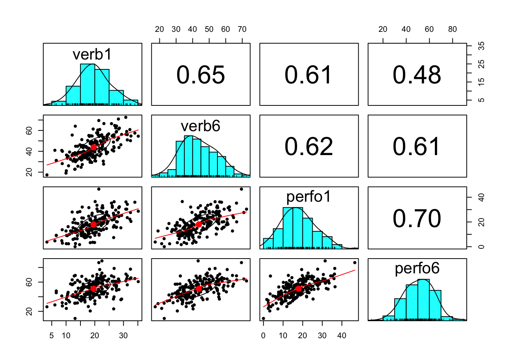
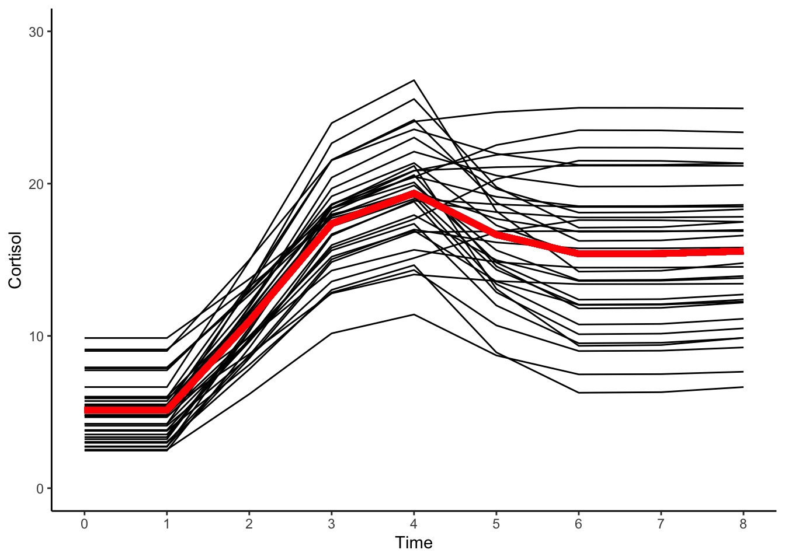

13.7 Data Example
This data example for this chapter is based on the APIM tutorial written by Miriam Brinberg and Nilam Ram. The original version is available on the QuantDev website.
This tutorial reviews the Actor-Partner Interdependence Model (APIM; Kashy & Kenny, 2000; Kenny, Kashy, & Cook, 2006), which is often used to examine the association (1) between two constructs for two people using cross-sectional data, or (2) between the same construct from two people across two time points.
13.7.1 Preliminaries
Let’s begin by loading the neccessary libraries and reading in the data.
library(ggplot2) #for plotting
library(nlme) #for model fitting
library(psych) #for general functions
library(reshape) #for data management
filepath <- "https://quantdev.ssri.psu.edu/sites/qdev/files/wisc3raw_gender.csv"
wisc3raw <- read.csv(file=url(filepath),header=TRUE)
data <- wisc3raw[, c("id", "verb1", "verb6", "perfo1", "perfo6")]
head(data)## id verb1 verb6 perfo1 perfo6
## 1 1 24.42 55.64 19.84 44.19
## 2 2 12.44 37.81 5.90 40.38
## 3 3 32.43 50.18 27.64 77.72
## 4 4 22.69 44.72 33.16 61.66
## 5 5 28.23 70.95 27.64 64.22
## 6 6 16.06 39.94 8.45 39.08We’ll also make a long version of the data set for later use.
data_long <- reshape(
data = data,
varying = c("verb1", "verb6","perfo1", "perfo6"),
timevar = c("grade"),
idvar = c("id"),
direction = "long", sep=""
)
data_long <- data_long[order(data_long$id, data_long$grade), ]
head(data_long)## id grade verb perfo
## 1.1 1 1 24.42 19.84
## 1.6 1 6 55.64 44.19
## 2.1 2 1 12.44 5.90
## 2.6 2 6 37.81 40.38
## 3.1 3 1 32.43 27.64
## 3.6 3 6 50.18 77.7213.7.2 Modeling Scenario
In this example, we are going to examine the association between verbal and performance ability using measures from first grade and sixth grade. We are interested in simultaneously examining whether
- verbal ability in the first grade is predictive of verbal ability in the sixth grade,
- performance ability in the first grade is predictive of performance ability in the sixth grade,
- verbal ability in the first grade is predictive of performance ability in the sixth grade, and
- performance ability in the first grade is predictive of verbal ability in the sixth grade.
When working with dyads, the above points 1 and 2 are often referred to as actor effects and points 3 and 4 are often referred to as partner effects.
While this example is not a “traditional dyad” - i.e., two distinguishable people - the analytic processes demonstrated here for bivariate data are applicable to the examination of dyadic data.
13.7.3 Descriptives
Before we run our models, it is often useful to get more familiar with the data via plotting and descriptives statistics.
Let’s begin with descriptive statistics of our four variables of interest: first grade verbal and performance ability, and sixth grade verbal and performance ability.
describe(data$verb1)## vars n mean sd median trimmed mad min max range skew kurtosis se
## X1 1 204 19.59 5.81 19.34 19.5 5.41 3.33 35.15 31.82 0.13 -0.05 0.41describe(data$verb6)## vars n mean sd median trimmed mad min max range skew kurtosis
## X1 1 204 43.75 10.67 42.55 43.46 11.3 17.35 72.59 55.24 0.24 -0.36
## se
## X1 0.75describe(data$perfo1)## vars n mean sd median trimmed mad min max range skew kurtosis se
## X1 1 204 17.98 8.35 17.66 17.69 8.3 0 46.58 46.58 0.35 -0.11 0.58describe(data$perfo6)## vars n mean sd median trimmed mad min max range skew kurtosis
## X1 1 204 50.93 12.48 51.76 51.07 13.27 10.26 89.01 78.75 -0.06 0.18
## se
## X1 0.87We can see that both the mean and standard deviation of verbal and performance ability increase from first to sixth grade. While this is worth noting, the APIM will not be examining changes in mean levels of verbal and performance ability.
13.7.3.1 Correlations
Let’s also examine the correlations among the four variables.
#correlations
cor(data[, 2:5])## verb1 verb6 perfo1 perfo6
## verb1 1.0000000 0.6541040 0.6101379 0.4779672
## verb6 0.6541040 1.0000000 0.6183155 0.6106694
## perfo1 0.6101379 0.6183155 1.0000000 0.6958321
## perfo6 0.4779672 0.6106694 0.6958321 1.0000000#plot
pairs.panels(data[, c("verb1", "verb6", "perfo1", "perfo6")])
We can see that all four variables are relatively normally distributed.
We can see there are strong, positive correlations both across time within-construct and between-constructs.
13.7.3.2 Plots
Let’s also look at a few individuals to examine the within-person association between verbal and performance ability from the first to sixth grade.
ggplot(data = subset(data_long, id <= 9), aes(x = grade, group = id), legend = FALSE) +
geom_point(aes(x = grade, y = verb), shape = 17, size = 3, color = "purple") +
geom_point(aes(x = grade, y = perfo), shape = 19, size = 3, color = "pink") +
geom_line(aes(x = grade, y = verb), lty = 1, size=1, color = "purple") +
geom_line(aes(x = grade, y = perfo), lty = 1, size=1, color = "pink") +
xlab("Grade") +
ylab("Verbal and Performance Ability") + ylim(0, 80) +
scale_x_continuous(breaks=seq(0, 7, by = 1)) +
theme_classic() +
facet_wrap( ~ id)
Within these nine participants, there is some inter-individual variability. For example, some participants’ verbal and performance ability increase more than others, some participants have higher levels of verbal ability than performance ability (or vice versa) across time.
13.7.4 Dyadic Data Prep
We have learned to manipulate data from wide to long, and vice versa. Dyadic analyses require further manipulation in order to get the data in the correct format. We will walk through the data prep in two steps.
13.7.4.1 Step 1
First, we need to create one column that has the information for both outcome variables - i.e., for each person, the verb6 and perfo6 values will alternate.
This is almost like repeated measures data, but instead of having multiple time points nested within person, we have multiple (two) variables to nest within person.
data_melt <- reshape::melt(
data = data,
id.vars = c("id", "verb1", "perfo1"),
na.rm=FALSE
)
#rename "variable" and "value" variables
colnames(data_melt)[4:5] <- c("grade6_variable", "grade6_outcome")
data_melt <- data_melt[order(data_melt$id, data_melt$grade6_variable), ]Old Data
head(data)## id verb1 verb6 perfo1 perfo6
## 1 1 24.42 55.64 19.84 44.19
## 2 2 12.44 37.81 5.90 40.38
## 3 3 32.43 50.18 27.64 77.72
## 4 4 22.69 44.72 33.16 61.66
## 5 5 28.23 70.95 27.64 64.22
## 6 6 16.06 39.94 8.45 39.08New Data
head(data_melt)## id verb1 perfo1 grade6_variable grade6_outcome
## 1 1 24.42 19.84 verb6 55.64
## 205 1 24.42 19.84 perfo6 44.19
## 2 2 12.44 5.90 verb6 37.81
## 206 2 12.44 5.90 perfo6 40.38
## 3 3 32.43 27.64 verb6 50.18
## 207 3 32.43 27.64 perfo6 77.7213.7.4.2 Step 2
Second, we need to create two dummy variables (each 0/1) to “turn on/off” a row (more on this later) in our analyses.
We will create a new variable, verb_on that indicates which rows are for the verb6 outcome,
We will create a second variable, perform_on that indicates which rows are for the perfo6 outcome.
data_melt_old <- data_melt
data_melt$verb_on <- ifelse(data_melt$grade6_variable == "verb6", 1, 0)
data_melt$perform_on <- ifelse(data_melt$grade6_variable == "perfo6", 1, 0)Old Data
head(data_melt_old)## id verb1 perfo1 grade6_variable grade6_outcome
## 1 1 24.42 19.84 verb6 55.64
## 205 1 24.42 19.84 perfo6 44.19
## 2 2 12.44 5.90 verb6 37.81
## 206 2 12.44 5.90 perfo6 40.38
## 3 3 32.43 27.64 verb6 50.18
## 207 3 32.43 27.64 perfo6 77.72New Data
head(data_melt)## id verb1 perfo1 grade6_variable grade6_outcome verb_on perform_on
## 1 1 24.42 19.84 verb6 55.64 1 0
## 205 1 24.42 19.84 perfo6 44.19 0 1
## 2 2 12.44 5.90 verb6 37.81 1 0
## 206 2 12.44 5.90 perfo6 40.38 0 1
## 3 3 32.43 27.64 verb6 50.18 1 0
## 207 3 32.43 27.64 perfo6 77.72 0 1There are many alternative ways to prepare dyadic data. For example, see https://github.com/RandiLGarcia/2day-dyad-workshop/blob/master/Day%201/R%20Code/Day%201-Data%20Restructuring.Rmd). It will depend on how you choose to run your analysis (described further later).
13.7.5 APIM
Now that we know a bit more about the data we are working with and have the data prepared in a single-outcome (double-entry) format, we can set up our APIM model.
We’ll run this model in the nlme package.
Specifically, we’ll examine whether:
- verbal ability in the first grade is predictive of verbal ability in the sixth grade (verbal “actor” effect),
- performance ability in the first grade is predictive of performance ability in the sixth grade (performance “actor” effect),
- verbal ability in the first grade is predictive of performance ability in the sixth grade (verbal “partner” effect), and
- performance ability in the first grade is predictive of verbal ability in the sixth grade (performance “partner” effect).
13.7.6 Null Model
Before running this full model, we will examine the empty model to determine how much variability there is within- and between-persons. Specifically,
\[ Grade6Outcome_{i} = \beta_{0V}VerbOn_{it} + \beta_{0P}PerformOn_{it} + e_{Vi} +e_{Pi} \]
apim_empty <- gls(
grade6_outcome ~ -1 + # turn OFF the intercept
verb_on + # intercept for verbal scores
perform_on, # intercept for performance scores
correlation = corSymm(form= ~1|id),
weights = varIdent(form= ~1|verb_on), # allows for 2 error terms
data = data_melt,
na.action = na.exclude)
summary(apim_empty)## Generalized least squares fit by REML
## Model: grade6_outcome ~ -1 + verb_on + perform_on
## Data: data_melt
## AIC BIC logLik
## 3063.861 3083.893 -1526.931
##
## Correlation Structure: General
## Formula: ~1 | id
## Parameter estimate(s):
## Correlation:
## 1
## 2 0.611
## Variance function:
## Structure: Different standard deviations per stratum
## Formula: ~1 | verb_on
## Parameter estimates:
## 1 0
## 1.000000 1.170165
##
## Coefficients:
## Value Std.Error t-value p-value
## verb_on 43.74990 0.7467029 58.59077 0
## perform_on 50.93162 0.8737660 58.28977 0
##
## Correlation:
## verb_n
## perform_on 0.611
##
## Standardized residuals:
## Min Q1 Med Q3 Max
## -3.25897660 -0.72994511 -0.02108775 0.72002989 3.05118321
##
## Residual standard error: 10.66505
## Degrees of freedom: 408 total; 406 residualWe examine the correlation of the verbal and performance error terms to determine the degree of non-independence in the data. We can see that \(\rho = 0.61\), indicating the correlation across dyad members, children who have higher verbal ability tend to also have higher performance ability.
A few other points to note:
- The results for
verb_onindicate the average or expected verbal score at grade 6 is 43.75. - The results for
perform_onindicate the average or expected performance score at grade 6 is 50.93.- Both these expected values correspond to sample means in the raw data.
- The grade 6 verbal and performance scores also each have estimated “standard error” values. The estimated standard error for Grade 6 verbal scores is 10.67 and the estimated standard error for Grade 6 performance scores is 12.48 = (1.17*10.67).
- Note that these estimates exactly match the respective standard deviations in the raw data (see descriptives above).
For completeness of representing the data we can get the means and variances of, and correlation between, the two predictors from the raw data.
13.7.7 Full APIM
Next, we are going to run our full APIM model using the two-intercept approach. Specifically,
\[Grade6Outcome_{it} = \beta_{0V}VerbOn_{it} + \beta_{1V}VerbOn_{it}*Verb1_{it} + \beta_{2V}VerbOn_{it}*Perform1_{it} + \\ \beta_{0P}PerformOn_{it} + \beta_{1P}PerformOn_{it}*Perform1_{it} + \beta_{2P}PerformOn_{it}*Verb1_{it} + e_{Vi} +e_{Pi}\]
So when verb_on is equal to 0:
\[Grade6Outcome_{it} = \beta_{0P}PerformOn_{it} + \beta_{1P}PerformOn_{it}*Perform1_{it} + \beta_{2P}PerformOn_{it}*Verb1_{it} + e_{Vi} +e_{Pi}\]
and when perform_on is equal to 0:
\[Grade6Outcome_{it} = \beta_{0V}VerbOn_{it} + \beta_{1V}VerbOn_{it}*Verb1_{it} + \beta_{2V}VerbOn_{it}*Perform1_{it} + e_{Vi} +e_{Pi}\]
apim_full <- gls(grade6_outcome ~
-1 + # turns OFF intercept
verb_on + # verbal intercept
verb_on:verb1 + # verbal "actor" effect
verb_on:perfo1 + # performance "partner" effect
perform_on + # performance intercept
perform_on:perfo1 + # performance "actor" effect
perform_on:verb1, # verbal "partner" effect
correlation = corSymm(form=~1|id),
weights = varIdent(form=~1|verb_on), # allows for different error terms
data = data_melt,
na.action = na.exclude)
summary(apim_full)## Generalized least squares fit by REML
## Model: grade6_outcome ~ -1 + verb_on + verb_on:verb1 + verb_on:perfo1 + perform_on + perform_on:perfo1 + perform_on:verb1
## Data: data_melt
## AIC BIC logLik
## 2879.029 2914.997 -1430.514
##
## Correlation Structure: General
## Formula: ~1 | id
## Parameter estimate(s):
## Correlation:
## 1
## 2 0.312
## Variance function:
## Structure: Different standard deviations per stratum
## Formula: ~1 | verb_on
## Parameter estimates:
## 1 0
## 1.000000 1.188537
##
## Coefficients:
## Value Std.Error t-value p-value
## verb_on 19.869325 1.8634459 10.662679 0.0000
## perform_on 30.049124 2.2147736 13.567582 0.0000
## verb_on:verb1 0.809886 0.1150893 7.037017 0.0000
## verb_on:perfo1 0.446064 0.0800504 5.572292 0.0000
## perfo1:perform_on 0.962419 0.0951429 10.115507 0.0000
## verb1:perform_on 0.182846 0.1367879 1.336709 0.1821
##
## Correlation:
## verb_n prfrm_ vrb_n:v1 vrb_n:p1 prf1:_
## perform_on 0.312
## verb_on:verb1 -0.738 -0.230
## verb_on:perfo1 -0.034 -0.011 -0.610
## perfo1:perform_on -0.011 -0.034 -0.190 0.312
## verb1:perform_on -0.230 -0.738 0.312 -0.190 -0.610
##
## Standardized residuals:
## Min Q1 Med Q3 Max
## -2.55877996 -0.66034371 -0.02441614 0.62804539 3.69258907
##
## Residual standard error: 7.545255
## Degrees of freedom: 408 total; 402 residual13.7.7.1 Results
- The expected verbal score at grade 6 = 19.87 and the expected performance score at grade 6 = 30.05 when verbal and performance scores at grade 1 are equal to zero.
Actor Effects
- The actor effect of verbal ability is 0.81, indicating that every 1.0 point difference in children’s verbal ability at Grade 1 is associated with a 0.81 point difference in Grade 6. Stated differently, earlier differences in verbal ability influence later differences in verbal ability.
- The actor effect of performance ability is 0.96, indicating that every 1.0 point difference in children’s performance ability at Grade 1 is associated with a 0.96 point difference in Grade 6. Stated differently, earlier differences in performance ability influence later differences in performance ability.
Partner Effects
- The partner effect of performance ability on verbal ability is 0.45, indicating that every 1.0 point difference in children’s performance ability at Grade 1 is associated with a 0.45 point difference in verbal ability at Grade 6. Stated differently, earlier differences in performance ability “influence” later differences in verbal ability.
The partner effect of verbal ability on performance ability is not significantly different than zero, indicating that earlier differences in performance ability at Grade 1 do not “influence” later differences in verbal ability at Grade 6.
Additional Info
- \(\rho = 0.31\), indicating the correlation across variables (or dyad members). Here, higher verbal ability scores tend to be paired with higher performance ability scores.